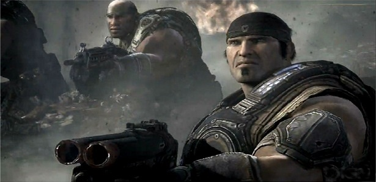
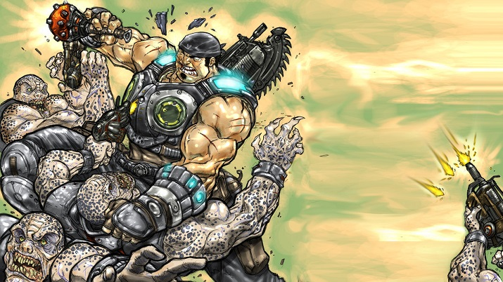
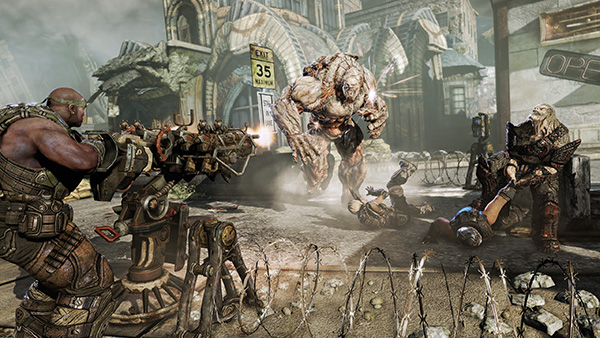

The process for completing Horde mode on Insane difficulty is very complex and must be well understood if you want to succeed.
Firstly, the player must choose a character to play as, a pair of starting weapons, optionally Mutators, and a map to play on. The character selection
may seem unimportant since it doesn't have any effect on the player's abilities in game, however, it is much more important than it seems.
You don't want to play as a character you don't like, because then you won't enjoy yourself, and it is difficult to play a game well if
you hate who you play as. Also, different characters have different dialogues, which can be humorous and make the game more fun, as well
as motivating! so you want to make sure you choose a character you like. Choosing a starting weapon is very important because it determines
how you start the game. All of the weapons are good, the choice depends on your style. You must select a primary and secondary weapon. The primary
weapons are most important. The Lancer is an automatic, long range gun that also has a Chainsaw on it for brutal melee kills. The Retro Lancer has less
range and accuracy, slightly more power, and has a bayonet that you can use to charge at an enemy and stab them for instant kill. The Hammerburst is a
long range semi-auto gun with lots of ammo but not as good firepower. Then the secondary weapon options are Gnasher Shotgun and Sawed-Off Shotgun. The
Gnasher has a lot more ammo but can take a while to kill enemies, but is useful if you run out of all other ammo. The Sawed-Off has very limited ammo, only
a couple of shots, but has a wide area of effect, but must be used at very, very close proximity, and can kill multiple enemies instantly at a time.
You do not want to miss and waste those bullets.

Now choosing a map is difficult, because there is a wide selection that are all unique. You may need to test multiple maps before finding one to
your liking. Mutators are extra things that can make your game more difficult, or easier, or just plain foolish and fun. They are not mandatory.
Now, once you are in your map, you must choose a base. It is recommended to find a spot with as few entry points as possible, but not in a very tight space.
One of few entry points will make it easy to funnel all the Locust into one area where they are easy to pick off and keep track of. You want somewhat of an
open space so that one explosive enemy round doesn't take out your entire team at once. Once a satisfactory position is chosen, in the 30 second countdown,
it is recommended to create fortifications. You can create many things from barriers to sentry guns to decoy posters, but only in spots predetermined by the map.
Once the wave begins, Let loose all Hell on the Locust Horde. Always try to conserve ammo, because only starting weapons get free ammo back, but not all of it.
A good way to save ammo is to use a pistol, which the player starts with as well as the two starting weapons and a smoke grenade. Also the player can use melee.
Melee attacks are great especially if you have a regular or Retro Lancer, because their special chainsaw and bayonet charge are instant kills on most enemies.
Grenades are very useful if you find any. Ink grenades create a big poisonous fog and slowly kill enemies while frag grenades just explode and make a mess of body
parts. Smoke grenades only create smoke and block vision, but on Insane difficulty it hardly affects the Locust and mainly just blocks your own vision. It is not
uncommon to use it early on. All grenades can be planted on surfaces to create mines, or tagged on enemies so it explodes on them. 
Weapons can always be picked up from dead Locust, and it is often needed if you run out of ammo. Something to note is that enemies as well as players can get
"downed" before dying. Getting downed means that you are bleeding on the ground and you can slowly move but cannot attack. Teammates can revive that player if
they reach the player before he bleeds out or is executed. Human players must be blown up or executed to finish them off. Execution means that a Locust goes up to
you and killed you with some kind of melee finish. The most generic being the curb stomp. Keep in mind, the player can only get downed twice, the third time,
the player will just die. At each boss wave, it is often a good strategy to kill off all other Locust before focusing on the boss, so that you aren't preoccupied
while the entire Horde sneaks up on you and breaches your defences. You will fail boss waves many times, but no matter, it is sometimes good to keep waiting until you
get the easiest boss which is usually Gunkers. That being because they can be instantly killed if they are tagged with a frag grenede... if you can get that close.
It is important to remember that bosses can very easily destroy defences, and it is not worth it to repair them if you failed the boss wave, because then the next boss
on the retry will break them again and you will lose all that hard earned cash.

One last important aspect of Horde are bonus waves. At random times, Horde will give you a bonus optional objective. it can be to complete the wave in a limited time,
or to kill a certain number of enemies a certain way. Whatever the bonus, it is good to try because if the bonus is completed, the team receives bonus cash as well as two
crates of weapons and ammo for free.
Any additional information about Horde needed may be found
HERE.